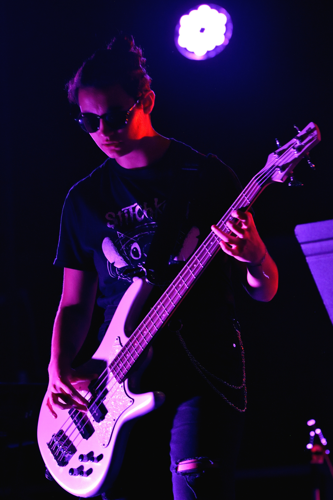

Upsiring est né d'une faute d'orthographe à un titre connu dont nous tairons le nom. Après avoir
fait
danser les singes de la baie et les coloc'ataires de cournon. Le folklore raconte que les 5 seraient
descendus de leurs esplanades dorées : amputés de leurs lauriers, mais tous vêtus de cuir. C'est
alors
le soir venu, qu'Upsiring enflammerait vos âmes et vos chaussettes avec.
5 légendes, interprétant le rock comme Booba chante son amour pour karrys: électrique, saisissant,
vibrant, vivant.
Ils feraient même danser les cailloux.
Instrumentistes
Josselin Grangeon est le guitariste de ce groupe.
Âgé de 20 ans, il est le compositeur.
Charly Vincent, batteur de Upsiring.
Âgé de 20ans, Charly apporte la bonne humeur et le dynamisme.
Sasha Baldassin, bassiste et claviériste du groupe Upsiring.
Âgée de 19ans, elle est également compositrice.

Chanteuses
Jill Bourdon, Chanteuse Lead du groupe.
Âgée de 31 ans, Jill intéragit avec le public et s'occupe de trouver des dates.
Jo Jarry, Chanteuse choeur du groupe.
Âgée de 23 ans, Jo est la parolière et la chargée de communication de Upsiring.